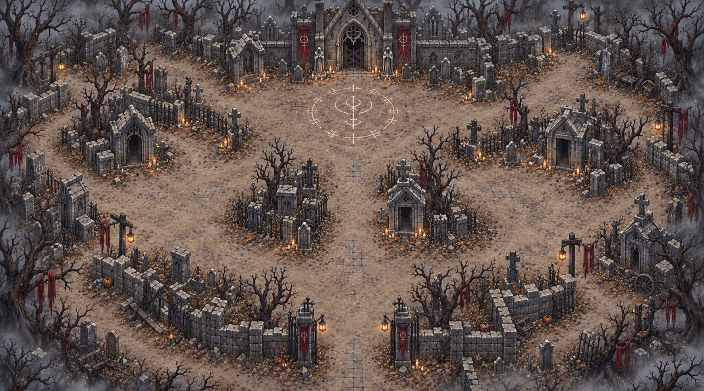
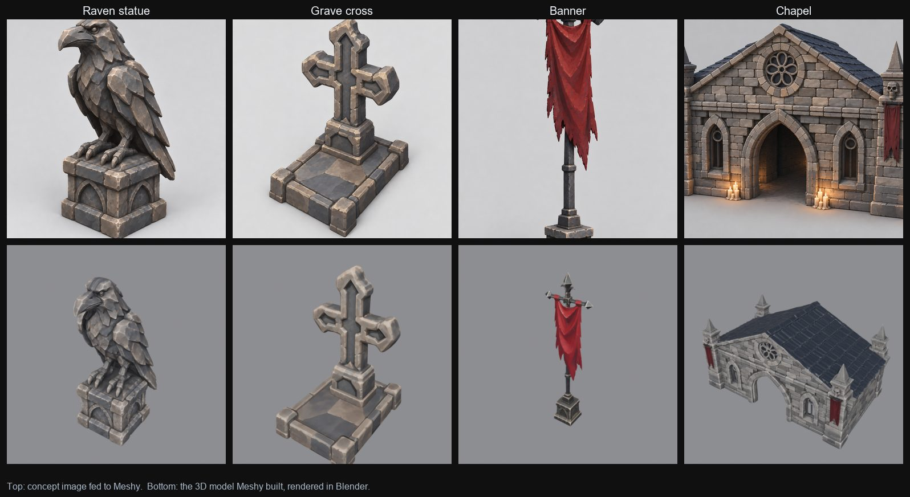
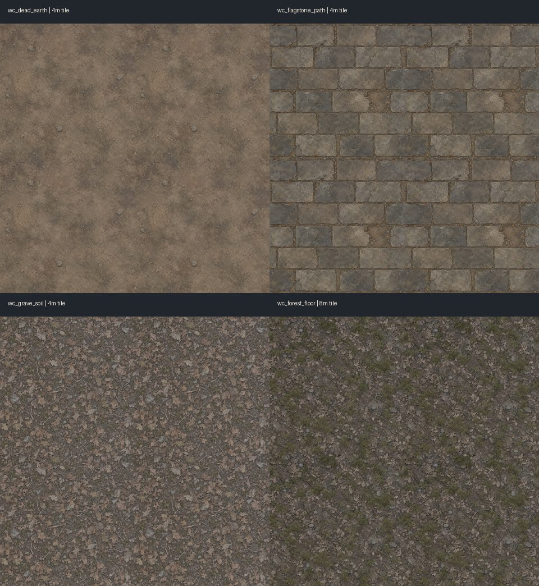
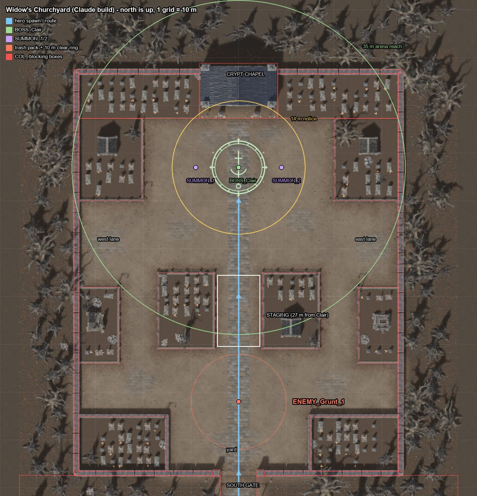
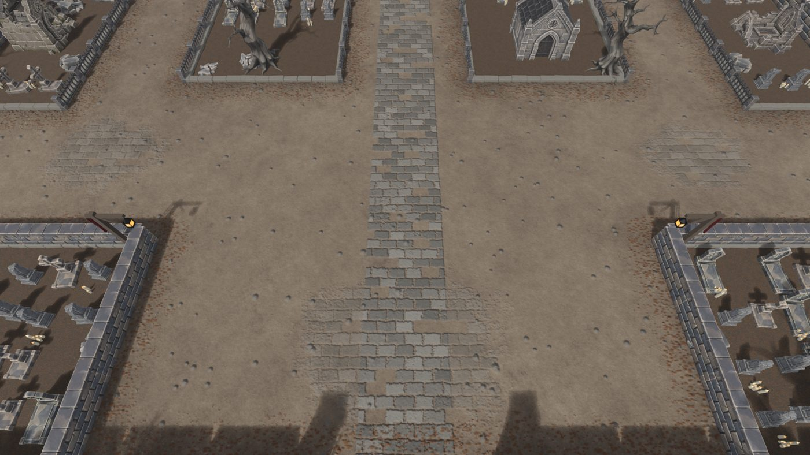

I'm building DungeonTeam, an online co-op dungeon game in Unity 6 where up to five players team up against raid-style bosses. This first devlog isn't about gameplay, though. It's about the part that took me the longest to figure out: how a level goes from an idea to something you can actually walk around in.
The level is Widow's Churchyard, home of the first boss. Here's the pipeline I landed on.
1. Start with one picture
Everything starts from a single reference image of the whole level: a dead churchyard with a crypt chapel at the north end, fenced grave plots, a flagstone path, and the boss's sigil on the ground. It sets the mood, the palette and the layout in one go, and every later step gets checked against it.

2. Picture to 3D with Meshy
Each prop gets its own concept image, which goes into Meshy's image-to-3D. Meshy guesses the whole shape from one picture, so the image has to look like a clean product shot:
- One object only, centred, with nothing cropped off the edges
- A plain grey background, so Meshy can cut the object out cleanly
- No ground plane or cast shadow, which Meshy would read as geometry
- Soft, even lighting from a three-quarter view

3. Name everything the same way
Meshy downloads arrive with long generated names, which gets messy fast. Every asset gets
renamed to one pattern, mshy_<name>_<variant>, and lives in its own folder:
the model, its textures (_base, _normal, _MSO and so on), and a
small manifest recording where it came from. That sounds fussy, but it's what lets the
scripts later on find a model's textures and material by name, with no clicking around.
4. Fix the scale
This was the surprise. Meshy hands back every model at roughly the same size, about 1.9 m on its longest side. The raven statue, the grave cross, the banner and the chapel all come out the same size. So scale is a deliberate step, not something you can trust from the import.
I work in real metres (1 Unity unit = 1 m). There's a 2 m stand-in hero to judge everything against, and each asset has its own scale in one table. The chapel gets ×8.4 to become a 16 m crypt; a headstone stays about knee-height. Changing a number in that table and rebuilding updates every copy of that prop in the level.
5. A floor that doesn't look like a grid
The ground is four seamless texture tiles: dead earth, flagstone path, grave soil, and forest floor. The trick with tiles is avoiding anything big and recognisable. One distinctive root or stone, repeated every 4 m, turns into an obvious pattern, so the tiles stay calm and even, and the big features (roots, rocks, trees) get placed as 3D props on top instead.

6. Lay it out with numbers
The layout is written as data: positions in metres, in Unity's coordinates, with the gameplay rules checked against it. The party walks about 158 m from the start, through two forest clearings with enemy packs, then through the south gate and the yard. They gather 27 m from the boss, and the fight happens on a 39 m plaza in front of the crypt. Collision boxes and a navigation grid come from the same data, so walls and pathfinding always match the art.

7. Build in Blender, ship to Unity
A script assembles the whole level in Blender from the layout and the asset library, then renders previews from the game's actual camera angle. That's where I catch problems: a wall hiding the floor, a prop at the wrong scale, the boss arena too cramped. It exports one FBX "kit" with each mesh once, plus a list of placements. A Unity editor tool then rebuilds the scene from those files, with materials, colliders and spawn points.

- 1,097objects in the level
- 44unique meshes
- ~650ktriangles on screen, worst case
- 1.5Mtriangle budget
Once it's in Unity, a lighting and post-processing pass adds the mood: dim cool moonlight, a vignette, low exposure and some fog. That's what turns a flat-lit layout into a churchyard.

A note on AI
I lean on AI tools all through this: image generators for concepts and textures, Meshy for the 3D models, and Claude and ChatGPT to help write the Blender and Unity scripts. I had each of them build a version of this churchyard from the same brief so I could compare them side by side. The part I care about is the pipeline around them: the naming, the scale table, the layout rules and the checks. That's what makes the output usable in a real game.
What's next
The crypt is the first thing to replace. It's a stretched chapel right now, so it looks soft up close. After that, it's back to gameplay: playtesting the boss fight in this space and tuning the layout around how the party actually moves.